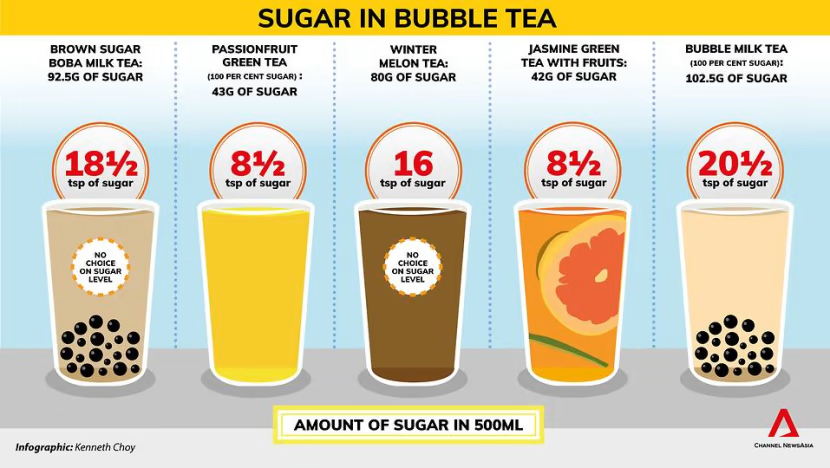
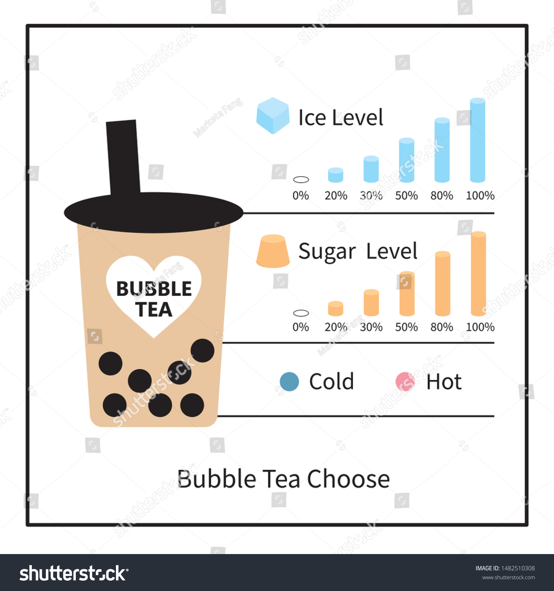
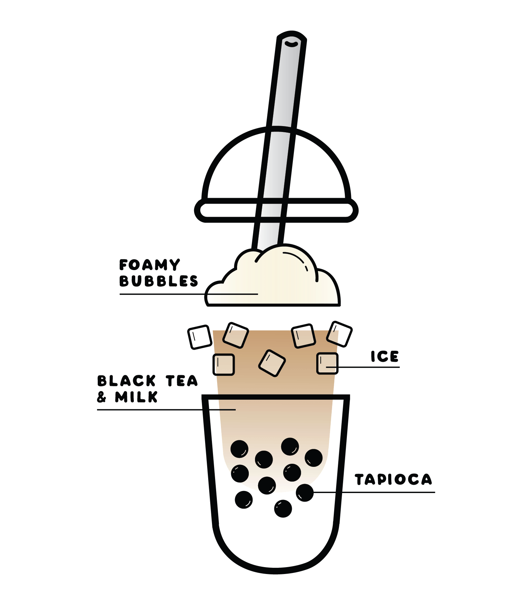

ethan - levels of ice and sugar
here are the best levels of ice and sugar for your bubble tea!!!!!!!!!!
popular ice levels:
- half ice
- 25% ice
- 75% ice
why is the ice and sweetness level important?
the ice and sweetnes are the main things you are asked when ordering boba. they make or break the drink.
- sweetness 30%
- 50% sugar
- 120% sugar
images of the mentioned things:



for more info, please visit the index page linked below
link to index page